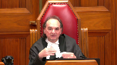
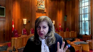
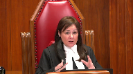

Grant Thornton LLP, et al. v. Province of New Brunswick, et al.
This transcript was made with automated artificial intelligence models and its accuracy has not been verified. Review the original webcast here.
Justice Kasirer (00:00:03): The court, la cool.
Justice Moldaver (00:00:29): Good morning everyone.

This is the matter of Grant Thornton LLP et al.
versus the province of New Brunswick, and between Grant Thornton International Limited versus the province of New Brunswick.
For the appellant Grant Thornton LLP and Kent M. Ostrich, Peter Griffin and Anthony S. Richardson.
For the appellant Grant Thornton International Limited, Stephen Barnett and Jay Charles Foster QC, but council is appearing but not presenting.
And for the intervener, Chartered Professional Accountants of Canada, Mr. Guy Jay Pratt.
And for the respondent, province of New Brunswick, Josie H. Marks and Frederick C. McKelman QC.
I should indicate to you that Justice Kara Koussanis is with us.
She will be participating in the hearing virtually just so that you’re aware of that.
All right, Mr. Griffin, please.
Speaker 1 (00:01:47): Thank you, Justice Moldaver.
I hope that the court can hear me.
Justice Moldaver (00:01:55): Yes, we can.
Thank you.
Very good.
Speaker 1 (00:01:57): The decision of the Court of Appeal brings into sharp focus what a plaintiff must know in order to commence an action within an applicable limitation period.
To the Court of Appeal in this case, it means that the plaintiff must know that it has a legally enforceable right to a remedy.
Facts that confer a legally enforceable right to a remedy.
That right in the view of the Court of Appeal only exists if the plaintiff knows that the defendant was under a relevant duty of care and its loss-causing act or omission fell below the applicable standard of care.
In this case, that the loss was the fruit of a substandard audit.
In the submission of Grant Thornton, that reads a level of certainty of knowledge into the analysis and to Section 5 of the Limitation of Actions Act far too early in the litigation process.
It cannot be the right policy.
It is inconsistent with the statutory evolution of limitation statutes in this country.
It is inconsistent with the type of document necessary to engage the beginning of the civil procedure evidence gathering process.
Here, however, the Court of Appeal and the province say that until the province receives Grant Thornton’s working papers and file, it could not discover its claim.
The province must then assert in this appeal that it required discovery before pleading to be able to plead the very claim it pleaded without discovery.
And I say, how can that be?
This plaintiff necessarily discovered the claim before the date it commenced the action as it pleaded the very claim.
It made the inferences necessary to plead that claim that I urge before you.
So in my respectful submission, in the end, a result consistent with statute, consistent with common sense, consistent with this Court’s decision and refuse, all that’s necessary is the ability to plead the necessary material facts to commence a claim.
Justice Côté (00:04:04): Mr. Griffin, if we follow the interpretation of the Court of Appeal, it would mean that the claim would not be discovered yet, even during the trial.
Until you get the documents, you could say, a plaintiff could say, oh, I have not discovered my claim yet.
Speaker 1 (00:04:30): I agree, Justice Côté, that is the irony of the position, but also it, as I will hopefully develop shortly, it also points up the nature of the exercise that the Court of Appeal looked at, where it debated the extent of expert evidence at the gateway stage instead of where it belongs, which is later.
And so is the plaintiff ever going to be satisfied, Justice Côté, that they have everything that they need to say that they have the level of certainty that the Court of Appeal described.
And in my respectful submission, that puts the debate at the wrong end of the evidence-gathering process.
Statement of claim just gets you engaged to get into the civil procedure process.
This is why your Court’s guidance is necessary here to give the direction that the practice needs, because as you see from the material, there are multitudes of limitations of action cases that could be considered by the courts all the way through the last period of time since these statutes have been created.
We say when a plaintiff knows or ought to know of the grounds to infer, not prove, infer their particular claim, that is sufficient.
Justice Brown (00:05:44): When you say infer particular claim, what do you mean?
Do you mean infer the material facts or infer that the material facts which include the loss and the act of the defendant are prima facie demonstrative of negligence?
Speaker 1 (00:06:07): Well, I use the words prima facie in our factum, Justice Brown.
I say that the plaintiff must, or the claimant in the language of the statute, must have sufficient material facts in hand that they can infer.
What does that mean?
Justice Brown (00:06:20): to have sufficient material facts in hand.
I don’t mean to be pedantic, but I think we actually need to know this clearly.
It’s an epistemological issue.
What does it mean to have material facts in hand?
Probably to know them.
But again, what does that mean?
Speaker 1 (00:06:37): Well, what it means in my respectful submission, Justice Brown, is that you know certain facts which are a basis upon which you can infer anything else which is necessary reasonably to arrive at a conclusion that the three elements of the statute are met.

Justice Brown (00:06:55): Well, sorry, I’m still not understanding that.
What are the certain facts?
Why are they the same things as the material facts that the statute requires you to know?
Overlapping speakers (00:07:07): Well, I say they are the material facts, because…
Justice Brown (00:07:09): Okay, so on this statute, what is it that the defendant or rather that the plaintiff has to know?
Speaker 1 (00:07:17): In this case, they have to know that they have suffered a loss. Right.
Secondly, they have to have an identifiable defendant. Right.
And neither of those are at issue with this appeal, Justice Brown.
Overlapping speakers (00:07:31): Right.
Speaker 1 (00:07:31): And the third element is that they have to have some evidence, some material facts of a loss causing event.
Justice Brown (00:07:43): Right, so the statute requires, first of all, injury damage or injury loss or damage that it occurred.

Secondly, caused or contributed to by an actor omission.
Third, of the defendant.
So is it your submission?
You have to know, plaintiff, all those three things before the limitation begins to toll.
Speaker 1 (00:08:04): not in the sense that the Court of Appeal describes it, Justice Brown.
In my respectful submission, what you have to know is sufficient facts that you can infer in this case that the injury loss or damage was caused or contributed to by an act or omission of the defendant.
Justice Brown (00:08:20): Well, that’s one of the material facts caused or contributed by an actor omission of the defendant.
Of course, this could have been caused by fraud, it could have been caused by another unlawful act, is what has to be inferred here that that act was negligent?
That seems to be what, for example, Justice Rulo says at the Ontario Court of Appeal.
Speaker 1 (00:08:47): Well, one is never very far away, Justice Brown, from having to characterize the act in a way that is legally significant.
So in that respect, one would have to be in a position to infer what is necessary beyond the material facts that you have in your possession in order to arrive at the point that it is of some legal significance.
Justice Brown (00:09:13): Okay, that’s helpful.
Thank you.
Justice Moldaver (00:09:15): I think, really, if I understand your position, by using the word prima facie and linking it to what I will call plausible inferences, plausible inferences, that distinguishes this from mere speculation.

There’s got to be some basis in the material facts that you are aware of or should be aware of that suggests that there’s a plausible basis for inferring that the defendant did an act or a mission which led to the loss that the plaintiff has sustained.
But it doesn’t go any higher than that.
That gives you enough to do a claim.
Speaker 1 (00:10:02): That’s all we’re talking about Justice Moldaver is enough to frame a claim and that’s all you have to get to in the course of this and there’s a continuum from suspicion to certainty.
I’m not at the suspicion end of the continuum but the certainty end of the continuum is at the wrong end of the civil procedure process because that’s the point that you deal with at a trial.
Coming back to Justice Cote’s point to me about you know when do you get there.
Justice Kasirer (00:10:30): Mr. Griffin, can I just, just to go back to Justice Brown’s point on the act or omission, the statute only speaks of act or omission, but you’re suggesting, if I understand you correctly, that this prima facie knowledge has something to do with the quality of that act or omission.
That is to say that it’s wrongful.
In other words, the defendant, we could attribute the loss to an act or omission of the defendant when that act or omission was completely innocent, that wouldn’t generate liability.
So, so we are qualifying the act or omission, and that’s one of the material facts, is it not?
Speaker 1 (00:11:17): I agree with you Justice Katsura in the sense that there has to be some logic to the process that is being followed and that’s why I said in response to Justice Brown that there has to be some legal significance.
The cases and as you have seen from my fact on my first argument is that there’s a difference between claim and cause of action.
We grow up with causes of action we think in terms of causes of action the cases fluctuate between cause of action and claim in some of the cases that we have provided to you but to respond to your question directly Justice Katsura I don’t see how one can say it isn’t of some legal significance and that characterizes the ability to make the inference.
Motion’s judge here said the inference was inescapable.
In my respectful submission it is.
Justice Côté (00:12:11): Do we make a distinction between claim and cause of action or not just because I know that in your factor you see we derive at the same result but should because the trial judge the motion judge here did not make that distinction sometimes he’s talking about the claim and other times he’s talking about the cause of action without making a distinction between the two.
Speaker 1 (00:12:34): Well, I think that comes from our training, Justice Côté, that we, as I said earlier, we tend to think in terms of causes of action and the common law approach that we bring to these.
I say that the test doesn’t change depending on which characterization you put to it, but I do say that the language of the statute was designed to simplify and streamline the process of approaching limitations of actions.
And you’ve brought me essentially to the Limitation of Actions Act, which was the place I was going to go next.
You’ve anticipated much of what I was going to say, so I’ll try and be brief on that and then come to the balance of my points.
Justice Moldaver (00:13:12): Just to go back to Justice Casir’s question, I’m just trying to get this straight in my head.
This is the claim stage.
You are looking at what I will call circumstantial evidence from which an inference can be drawn that the three factors in section five have been met.
The fact that you may be wrong in that at the end of the day, the fact that the defendant may have a very good explanation that you’re not aware of is neither here nor there, it seems to me, in terms of whether or not you can plead the claim, whether you’ve discovered a claim, if the test is this, you know, you’ve got enough to draw an inference, a plausible inference.
And because they’re all like all circumstantial evidence, I mean, there could be explanations.
You don’t have to show that it’s consistent with liability and inconsistent with any other rational conclusion at the claim stage, for sure.
You probably never have to do it in civil, but you know what I’m getting at.
Speaker 1 (00:14:22): I do and and and listen courts and lawyers are in the inference drawing business that’s what you do with respect as judges and that’s what we do as lawyers and all you have to do is get yourself to the point that you can frame a claim to put it in its bluntest terms and then from there you engage your ability to prove your case so the inferences are natural inferences that follow so many of these cases are are factually driven that it’s difficult to look at each one and say it informs the principle but effectively that’s what the courts are looking at and saying you know what is a reasonable inference that could be drawn in these circumstances that’s lawless that’s the series of cases that I have in our condensed book to try and give you the illustration of that example and all I say that the limitation of actions act does is to try and streamline it to the three elements that are in section five of the statute in order to iron out some of the anomalies that come from a pure cause of action analysis like refuse in which the breach of contract claim was statute barred and nobody argued about it the issue was whether the tort claim was still alive by virtue of the inference that could be drawn when the defense was raised in that case of an illegal mortgage did that then lead to the inference that there was negligence and that’s when the court said the clock started to run and the plaintiff was saved in respect of that claim.
Justice Brown (00:15:53): I just want to be clear, what we are inferring here is what you’ve just described, is negligence, isn’t it? It is.
Right, the material facts must be known, but the negligence is something that can be inferred.
It might be disproven ultimately when the claim is litigated.
I mean, I think about something much more common like a car accident, right?
And the car accident happens when the defendant’s vehicle veers into an oncoming lane and strikes the plaintiff’s vehicle, right?
We know that there’s a loss.
We know that it was caused or contributed by an act of the defendant.
But what we don’t know is whether there’s negligence, but we can infer it, even though there may be other possible causes, such that there’s no doubt that the limitation period tolls from the date of the accident.
Does that fair?
Speaker 1 (00:16:51): That is fair Justice Brown and what that means in my respectful submission is that the defendant may have a perfectly valid defense which they can advance and then you frame those issues and you litigate them and the fraud example which was given a bit earlier maybe that’s part of the defense that there was a fraud and couldn’t reasonably be discovered.
We had some of that debate Justice Brown you’ll recall in the live ant case.
Indeed we did.
So all I’m suggesting is that
and that’s why I gave you in the argument the stages of a civil proceeding not that you don’t know them but just to remind us of what those elements are and really you know I’ve said what I’ve got to say about the Limitation of Actions Act.
I think what I’d like to do is to just come to that section that I’ve given you at the end of my short outline of argument about the stages of the civil proceeding just to remind us and I won’t tread the ground that has come from that question.
Justice Moldaver (00:17:46): Before you go there, Mr. Chippen, I just have one more question.
You’ve got to look at, it seems to me in these cases, all of the circumstances when you are determining whether or not we’ll call it a prima facie, you have a prima facie case of a claim in negligence, as my colleague says.
So here, for example, when you get the February 11th report from Richter that talks about discrepancies of 25 to 30-some million.
I can’t remember the exact numbers, but a big, big number in the context of a $50 million loan guarantee.
The case might be very different if all you had was a $2 million discrepancy.
And you would have to really sort of question, is that enough in this context to give me a prima facie basis for inferring that there’s been negligence here?
So I just use that as an example of everything is fact-specific, it’s fact-driven, and you’ve got to look at all of the facts, it seems to me, in terms of deciding whether or not the test of discoverability has been met.
Speaker 1 (00:19:02): I don’t disagree with you Justice Moldaver.
That’s the world in which the claimant as the statute defines them finds themselves at the time that they’re making the decision and essentially what the what the claimant is doing is making a set of allegations because that’s what a statement of claim is.
That’s the initial process that engages the evidence gathering process and the plaintiff may not have all of the evidence to support the allegations.
They don’t need to know with certainty that the allegations are true.
This court is already in the context of striking pleadings in the Knight case to describe the high standard that applies.
The plaintiff may only hope to be able to prove the facts but the facts as a matter of policy are deemed to be provable and true.
Novel claims can survive.
Novel duties of care can be alleged.
Alternative claims can be alleged and just stop to think about alternative claims.
That’s part of a statement of claim.
So a high degree of particularity is not required and there’s no attack on this pleading.
Nobody went after this pleading this 106 paragraph pleading and said that it didn’t make out a cause of action.
That’s not the issue before you.
How could there be?
And the second stage is a delivery of the statement of defense and the statement of defense the issues are joined.
That frames what is content in contention.
That raises the fraud if the fraud is an issue.
And just note and I have it in my condensed book at paragraph 108 of the court of appeals decision that the court says in essence Grant Thornton was successful in securing a summary judgment as time barred on the basis the province knew or reasonably ought to have known that the audit was not carried out with generally accepted auditing standards.
But the court says but Grant Thornton not only denies this but states that it’s not factual.
Well of course this is the pleading stage and in my respectful submission it confuses what I call phase one or stage one with the final fact gathering process and the trial.
And it’s only then in my respectful submission that you get to documentary discovery that you get to oral examination for discovery and that’s where you do the proving of your case.
That’s where you take the factual assertions and that’s where you prove them if you can.
And in that case where the critical evidence is in the hands of the defendant that’s where it comes out and that’s where it gets dealt with.
Those are the second and third stages or phases that I’ve described.
When you get to the next stage you may well engage your expert reports and in a professional negligence case you would expect that to happen.
And they will focus on whether the standard of care was breached based on the facts that have come out.
Now the court of appeal says at paragraph 123 there’s no expert opinion evidence to establish Grant Thornton did not comply with generally accepted auditing standards and carrying out its audit.
In my respectful submission again the wrong question.
But that’s stage four.
And then the final stage is a dispositive stage where the court decides the matter.
Well just remind ourselves it’s on a balance of probabilities.
Well if it’s on a balance of probabilities at phase five in my respectful submission you cannot reconcile the court of appeals approach of the degree of certainty it’s looking for then with with the dispositive stage which brings me back to Justice Cote’s initial question.
Justice Martin (00:22:42): And may I ask you in terms of um that overview what what probative value or what are we to make of the final report going in in November of 2012 but I’m I the the December 21 uh letter 2012 to the uh from the government to the instant uh chartered accountants.
Speaker 1 (00:23:04): May I give you the short answer because I was going to come to that in the chronology, Justice Martin, but let me put it this way.
The evidence is, and it’s uncontroverted, that the final form of the report, but for some grammatical changes, is identical to the draft.
That’s the first thing.
The second thing is that on the footing of the draft, the Deputy Minister was able to frame a complaint to the Institute which is focused on the performance by the auditors in accordance with their professional standards.
That’s what that complaint is about.
I call that starting the first proceeding.
In other words, they were able to do that based on the information that they had.
The date of the final form of the of the Richter report is neither here nor there because it doesn’t do anything different than the draft did.
Justice Rowe (00:23:58): I don’t want to be pedantic, but I think that the orthodox way of viewing all this is that one pleads facts, not evidence.
One at trial presents evidence, and the judge makes findings of fact.
And then there is legal argument as to whether the facts as found make out a cause of action.
Speaker 1 (00:24:24): I don’t think you’re being pedantic, Justice Roa.
That’s the world in which we live.
And that’s why I’ve given you the various phases of a civil proceeding, because the entire structure of the Rules of Court of New Brunswick is to facilitate getting from phase one to phase five.
And that’s where we do our work at the end of the day.
So I’ve given you, within the condensed brief at tab four, a chronology.
And we’ve probably hit bits and pieces of it in the course of the questions.
But I just want to remind you that the timing of this and what led to the motions judge saying that the inferences were inescapable is really palpable within the chronology.
We know that the province executes loan guarantees in claimed reliance upon Grant Thornton in June of 2009.
And that’s in reliance upon a representation letter as to the processes it had gone through, which sets out in some detail the audit steps that it was in the process of completing.
Secondly, an audit of-
Mr. McFadden, we’ve been- Mr. McFadden, we’ve been- Mr. McFadden.
Mr. McFadden.
Justice Côté (00:25:35): Mr. Griffin sorry to interrupt again in their statement of claim just want to clarify your point in paragraph 32e one of the preachers alleged by the province is that Grant Thornton acted in conflict of interest I know that the Court of Appeal did not say a word about that they just said they are not going to discuss that but what was the issue is it because they gave the letter that this allegation was there

Speaker 1 (00:26:05): It’s never been very clear to me, Justice Cote, it was not developed in the evidence on the motion before Justice Grant or in the Court of Appeal.
So I’ve always thought that the conflict of interest allegation was a bit of an enigma.
Justice Côté (00:26:19): Okay, because if it is the fact that the letter was given in May 2009, the confirmation, what I call the confirmation letter, the province knew from that time that Grant was also the auditor of the company.
Speaker 1 (00:26:34): absolutely because the way in which the structure worked was that the province was only prepared to give the guarantees if they were satisfied that an appropriate third party would be giving them an opinion directly so the duty of care issue wasn’t the thing that would confound us in the course of this case and they took that letter which was before the audit opinion was signed which said we’re inbound to complete the audit opinion and here are the steps we’ve done and here’s what’s left to do and then the audit opinion was then delivered dated June the 18th about a month later on the January 31 2009 financial statements and from your court’s familiarity with the language of a clean audit opinion it says we conducted our audit in accordance with generally accepted auditing standards and based on that the financial statements present fairly in all material respects a financial position in accordance with generally accepted accounting principles so that everybody knows that the generally accepted auditing standards are what leads to the ability to give the opinion night as night follows day so it doesn’t take very long before there’s a receivership order February of 2010 a receivership order there’s a bankruptcy hearing the first ey report shows up which shows an 18.6 million dollar non-compliant borrowing base calculation or remember the borrowing base was in the 20s that is the the money that was available to support the borrowing this is highly highly material the province pays on the guarantees March 18 to 10 50 million dollars nine months later that money is out the door as Justice Grant said something had gone terribly wrong so June of 2010

Richter is retained to determine whether the financial statements were prepared in accordance with Gap and I’ve given you the in the chronology the similarity between the Grant Thornton engagement letter and the Richter report as to what they’re looking at the same thing the report is delivered in draft 88 pages and I won’t take you to it in excruciating detail of the non-compliance with Gap that report is delivered to the Attorney General’s Department of the Province of New Brunswick and it says as you’d indicated Justice Moldaver 28.3 to 35.4 million dollars in overstatements well in excess of the borrowing base and catching up to the amount of the guarantee something had gone terribly wrong.
Justice Moldaver (00:29:15): Sorry, can I interrupt you for one second, just to clarify something for me.

When Ernst and Young do their first report, as I understand it, August 4th, 2009, and they talk about $18.1 million total of potentially non-compliant items, can you just help me out factually what that refers to?
They weren’t, Ernst and Young was not looking at Grant and Thornton’s report, you know, the final report that they had submitted.
They were just looking at things on, I guess, a monthly basis.
This would have been really, very close.
Overlapping speakers (00:30:02): Sorry?
I’m sorry, Justice Paul.
Justice Moldaver (00:30:06): No, no, you go ahead.
I’m just trying to understand what that means, the 18.9 million.
Speaker 1 (00:30:12): So in the loan arrangements with the Bank of Nova Scotia that were guaranteed by Grant Thornton, the borrowing base is based on certain covenants being met, working process of such a value of certain currency, accounts receivable of such a value of certain currency.
So what Ernst & Young was doing right off the bat, because they got sent in in July of 2009 for the bank was to be its eyes and ears about what the state of the play was with the company.
And so that was the work it was doing.
It was measuring as against the covenants of the loan agreement that dealt with what the borrowing base was, because essentially the borrowing base is this big, you’ve got access to this much.
If it’s that big, you’ve got access to this much.
And that was their purpose.
So they were not in, and the evidence is perfectly fair, that they weren’t in to criticize the work that was being done by Grant Thornton.
But it gives you a bit of an indication in your all of the circumstances analysis, Justice Moldaver, that things were going terribly wrong.
So they’re on the,
Justice Côté (00:31:19): We are told that, or the province says that we should not give so much weight to the draft report from Richter in February 2011 because according to one of the limitations that we find at the end of the report, and Mr. Hadeski confirmed that in his affidavit, they were not retained to express their opinion on the auditor’s work.
Speaker 1 (00:31:44): So I have two responses to that, Justice Côté.
It’s a little different when you actually look at the tail end of the report on the limiting terms and conditions.
They say, and it’s in accordance with their responsibility to affirm under Quebec regulations that we’re required to advise a member if we’re performing a mandate related to the performance of their duties.
They were directed by the province not to speak to Grant Thorpe.
That’s the first point.
The second point is I accept that Mr. Odeski said, my mandate was not to criticize the work of Grant Thornton.
My point simply is that when you look at the magnitude of the discrepancies here, it cries out for an explanation.
And maybe that’s a shorthand way of describing what we’re dealing with here, but as night follows day, something is terribly wrong.
And if the audit opinion on GAAP is expressed based on performance in accordance with auditing standards, then that is your inference and my respectful submission.
And what becomes clear, and I was about to deal with this point, there’s no evidence that anything else is done by the province to advance its knowledge after February of 2011.
But when you read the statement of claim that was issued, you see that it made the very inferences I urge upon you.
But before it does it, it commences the professional misconduct proceeding by the complaint to the New Brunswick Institute.
And I’ve given you the language of the letter.
You’re engaging the professional responsibilities of the auditor who did the audit job.
I say that’s the first proceeding.
That’s the commencement of a proceeding.
But then when the action is commenced, it’s patterned virtually entirely on the Richter report.
And I’ve given you in the chronology, just a comparison of some of the language, which is in the statement of claim drawn completely from the report.
But it’s 106 pages of statement of claim, sorry, paragraphs of statement of claim.
And within it, there are two and a half pages which set out what is called Grant Thornton’s duty of care.
And then goes into a section, Grant Thornton’s breach of duties and negligence, a direct pleading that they failed to conduct the audit in accordance with gas.
And that’s repeated paragraphs 32 right through to 40.
And then 10 specific examples of where those failings took place in the course of the pleading.
So in my respectful submission, they made the very inference that they resist here.
Justice Karakatsanis (00:34:36): Mr. Griffin, I just want to be clear.
I’m sure this is clear, but I pause every time you say this report because the report on GAP was based on the auditing standards that there’s something we can infer.
My question is this, you’re not saying that as a general standalone principle.
You’re saying in the context here, given the degree and nature of the errors, the magnitude of the errors and all the circumstances.
There’s an inference to be made, but not just because a report based on GAP following, you know, the generally accepted auditing standards reached a different conclusion.
Speaker 1 (00:35:24): All right, well the Richter Report was a report on whether the financial statements of the business reflected its financial position in accordance with generally accepted accounting principles. Right.
So I’m not suggesting that the Richter Report went through an analysis of generally accepted auditing standards.
But my, my, but yeah, I wasn’t.
Justice Karakatsanis (00:35:50): Clare, I didn’t think you suggested that.
I thought you said because the Richter report itself was based on generally accepted auditing standards.
I didn’t mean it that way, Justice.
Speaker 1 (00:36:03): Kara Katsanis, what I meant was because the audit opinion that was given by Grant Thornton says that based on following generally accepted auditing standards, we express the opinion of the financial position of the company in these statements is reflected in accordance with generally accepted accounting principles that the linkage between the two for the plaintiff in this case, where the result from the Richter report is so off.
Overlapping speakers (00:36:33): That’s my-
Justice Brown (00:36:34): You
Overlapping speakers (00:36:34): expressed on the audit.
Justice Brown (00:36:35): opinion.
Speaker 1 (00:36:35): And so I don’t mean that’s a legal proposition as much as a practical result.
Thank you.
And so after that, of course, Grant Thornton files his statement of defense, and then the motion is ultimately brought seeking summary judgment.
And it’s only then that the province seeks access to an affidavit of documents with respect to the materials, which would be producible in the course, ordinary course of the litigation.
Justice Grant said, I don’t think it matters for purposes of my emotion, and off they went.
But they made the necessary inferences.
But what’s also important, and I just linger here for a few minutes, is no representative of the province gave evidence as to what it was doing between February of 2011 and the date that it commenced the action.
All of this was put together based on the evidence and the record, absent a best foot forward.
Justice Karakatsanis, of course, you’re more familiar than I with herniac and all of that makes us think about.
But one thing it tells us is at some point, the owner shifts, and you’ve got to deal with it.
And the province never dealt with it.
It never put its best foot forward.
It never explained it.
It avers in its factum that it commenced the action out of frustration.
Well, I say two things in respect of that.
There’s absolutely no evidence of that.
And it was a pretty good exercise of frustration because they managed to put together 106 paragraph statement of claim, making all the allegations necessary in a professional negligence case.
Justice Brown (00:38:11): But you don’t need the facts to file a pleading and to make allegations.
Like for example here, there is a pleading to the effect that Grant Thornton’s negligently rendered an opinion regarding the conformance of the financial year 2009 financial statements with Gap, right?
That doesn’t mean that they knew it, right?
They’re just alleging it.
But I’m wondering if maybe the significance of that pleading is this, is that it states a claim which leads us to ask when do they know the material facts as defined by the statute upon which the claim is based.
Again, they may not have known them at the time of the pleading, which is why it’s not demonstrative of knowledge.
But here, and I’m just thinking aloud because I wanna make sure that I’ve got this clear
and I suspect you’ll agree with it, but I’d just like your comment on it.
Here they did know, right?
Here they did know because of the draft report from Richter in February 2011 that states that the net earnings were restated somewhere between like 15 and 20 times and weren’t in accordance with Gap.
Speaker 1 (00:39:40): So I will take the hand.
I do agree with you.
Overlapping speakers (00:39:44): and
Speaker 1 (00:39:45): this case the inference is made out.
Cases vary.
That’s kind of the case, isn’t it?
It is the case.
And that’s what I’ve been arguing since the outset of this appeal.
I only get a chance to do it today.
Justice Côté (00:40:00): We are all discussing about the date of February 4, 2011.
And we say on that date, the province had discovered it had a claim.
This is the position.
But the first judge also agreed with that, but he said that the province had discovered its claim earlier in March 2010 when it paid the 50 million because it had attended, some of the representatives of the province had attended the insolvency meeting, I should say, and got a copy of the ENY report.
So should we still consider that date of March 2010 when the province paid the guarantee as the discoverability date?
Speaker 1 (00:40:47): Well, I could make that argument.
The Court of Appeal was not prepared to look at it on that basis on the theory that the notice of motion hadn’t pitched it in that way and I didn’t feel it necessary to make that argument before this court as an error because I say it beyond perventure of a doubt.
February of 2011 seals the fate of the province.
Justice Côté (00:41:12): Okay, thank you.
Justice Moldaver (00:41:13): One quick question, too.
I’m sorry, Mr. Griffin, you’ll get back on track very quickly, but just if you could just educate me about something.
When the bank agreed to guarantee the $50 million subject to receiving the report from Grant Thornton, whom it knew at the time was the auditor and accountant, I guess, of the companies, could it have requested of Grant Thornton at that time that Grant Thornton had to provide them with the consent of the company, the audit reports, could they have got that documentation if they just asked for it as a condition of making the guarantee, or would that have been totally improper?
I just don’t know.
Speaker 1 (00:41:57): Well, what the province did was to say to the company, we’re prepared to give you the guarantee.
If you give us an opinion from an acceptable third party in that respect, it takes us a bit back to the duty of care debate that one can have about what is the undertaking back to live in.
So we’re not so much looking forward to it, we’re not so much looking forward to it, we’re not so much looking forward to it, we’re not so much looking forward to it, we’re not so much looking forward to it, we’re not so much looking forward to it, we’re not so much looking forward to it, we’re not so much looking forward to it.
Justice Moldaver (00:42:17): looking at it from a point of view of the legal thing.
I’m just wondering whether the province could have covered itself by saying this is conditional upon us getting the audit reports and the files that they’ve been looking for apparently for many many years.
Speaker 1 (00:42:33): Well, there’s a distinction.
They did do that.
They said, you know, you’re going to, Grant Thornton, you’re going to deal directly with us and give us the assurances so there was no issue about their ability to rely.
And that’s why our identifiable defendant issue was not an issue in this particular case.
What it is that the plaintiff is after is to say, well, Grant Thornton, you’ve got working papers that show how you did the work internally.
And we want those until we get those, we can’t determine whether or not you were negligent.
Justice Moldaver (00:43:09): my initial question, could they have not asked for the working papers and everything that Grant Thornton did in order to step up to the plate to guarantee?
Speaker 1 (00:43:19): Well, I suppose you could.
What matters is the opinion, right?
That’s what they’re after. Right.
That’s what they’re after.
Overlapping speakers (00:43:26): they sued on.
Speaker 1 (00:43:31): It would be very unusual for a request by a third party to have the working papers.
But Richter could have asked for access and they were told that they shouldn’t contact Grant Thornton at all.
Justice Rowe (00:43:45): Even if the provincial government received such working documents, I question whether they would have the capacity to do the analysis.
That’s why you have professional people like accounting firms.
Speaker 1 (00:44:00): I agree Justice Roe and uh you know it would be an exercise at the outset of a relationship of auditing the auditor and uh not likely going to occur.
Justice Kasirer (00:44:11): I’m gonna risk being pedantic too, but just when you say it is as plain as night follows day that on February 4th 2011 the test was met, can I just ask you to state exactly what that is?
The question is whether the province had the knowledge of the material facts that were sufficient to reasonably commence proceedings?
Is that how you’d say it?
Speaker 1 (00:44:41): or I’d say they had sufficient material facts, prima facie facts, to draw the inference that there was an actor omission.
Justice Kasirer (00:44:51): I understand, but the drawing of the inference, the measure when a court goes looking for whether or not on the facts it’s appropriate to draw the inference, is it on that sufficient to reasonably commence proceedings standard?
Speaker 1 (00:45:12): It would be.
It’s sufficient to be able to advance a claim.
Because that’s all you have to do, Justice Kasir.
You got to frame a statement of claim.
So I just wanted to touch on a couple of other points.
KLB was a decision of this court in which it said the relevant type of awareness that a plaintiff should have to commence an action cannot be one that it’s possible to lack even after one has brought the action.
The province does say that this case should be limited to sexual abuse cases only.
I say there’s no principal basis for this
and I’ve given you in tab six of our condensed brief a number of cases which say the very same thing and some of which rely on KLB in a broader context than just sexual abuse cases.
But I just note that what that statement in KLB and what these cases show us is that from a practical point of view, how can a plaintiff argue that they didn’t have sufficient material facts or weren’t in a position to commence a claim or the limitation period hadn’t run when they’re able to frame a claim.
And in the Hoop case, just one example, the idea that the plaintiff sued just in case it had a claim is not one that can be accepted by the courts.
Suing out of frustration, my respectful submission falls into the same area.
So that really what I come down to in my submissions before this court is that discoverability and the ability to make reasonable inferences go hand in hand.
And for the province to assert as I take it that there’s no basis for reasonable inferences to ground the plaintiff’s discovery of a claim here is wrong.
If inferences can’t give rise to the discovery of a claim, claims would not be discovered before a plaintiff commenced an action or had complete discovery or saw everything that they thought they should see in order to advance their claim.
And you can think about that debate.
How much is enough?
Are the working papers enough?
Maybe we need the correspondence.
Maybe we need to interview some of the personnel who were involved.
Maybe not all of them, but just two.
No, maybe three.
In my respectful submission, it’s a morass.
And the inference that I urge upon you really falls naturally out of what happened in the refuse case.
Because this court, when it established together with the Nielsen case, the discoverability principle as a common law rule of construction, made the natural inference that once the defense was raised that the mortgage was illegal, that was where the clock started.
It was sufficient merely for the challenge.
And that was the type of inference we’re talking about.
And I’ve given you in the material and in the condensed brief at tab five, the cases that talk about reasonable inferences, which this plaintiff had no difficulty making.
The other element that I just wanted to touch on for a moment is the impossibility of the position of the court of appeal and of the province with respect to making of inferences.
Because you can think of very many circumstances where state of mind may be a relevant aspect, which one is never going to be able to plumb in the course of framing a claim.
In conspiracy cases, it may be the case that a plaintiff is not going to have evidence of the agreement that is pleaded, or the illegal conduct that’s pleaded, other than being able to point to the result.
Justice Brown (00:49:08): infer based upon, that’s why inferences are only drawable under this analysis from known material facts.
I accept that, and I think it’s a good thing that we
Speaker 1 (00:49:18): In other words, suspicion, I mean, you can look at the debate in the criminal law about reasonable search and seizure and suspicion, reasonable suspicion and up that continuum.
Suspicion would be a hunch in the absence of material facts.
Inference is something more.
You have to go from certain facts to get to the inference.
I accept that Justice Brown, there’s gotta be something there.
When you look at some of the other complex causes of action that your court has had to deal with, Cognos and negligent misrepresentation, we wouldn’t necessarily go through the exercise of trying to infer each and every element with respect to negligent misrepresentation as Cognos describes it, but we would know where when an act or omission has occurred.
That’s right.
Justice Karakatsanis (00:50:10): Yeah, Mr. Griffin, I just want to come back to the issue of the complaint to the regulator and where it fits into this analysis.
The motion judge said that it was sufficient to prove that the province knew it had a potential claim, which suggests he put it in, you know, actual notice, as opposed to in this framework about whether there were sufficient knowledge to draw reasonable inferences.
So I just want to ask you where you put it in that framework.
Is it relevant to the drawing of reasonable inferences or is it constructive kind of notice or is it actual evidence of actual notice?
Speaker 1 (00:50:56): Well we always debate whether professional regulation is the same thing as as dealing with a cause of action or a claim but remember that the focus of the rules of professional conduct of the New Brunswick Institute like the other institutes is on the performance of professional services competently and with honesty and integrity but competently is the big part of it and when you look at the letter from the Deputy Minister and it’s a big step you know for a officer of the
Overlapping speakers (00:51:24): Right.
Speaker 1 (00:51:24): to send that letter in but they were engaging the rules of professional conduct.
I say it probably rises to the level of sufficient knowledge because they’re pointing it directly at the conduct of the auditor in performing the audit
but if I don’t have to go that far because you can say that they were able to draw the necessary inferences to make that complaint based on the information they had that there was something there that should be investigated with respect to the professional conduct and conduct of the audit by the auditor.
Is there anything…
Justice Brown (00:51:59): anything in the record
oh sorry Justice Caricatsanis
Overlapping speakers (00:52:02): No, no, you go ahead.
Are you going to change topics?
Um, no, no, no.
Okay, go ahead then.
Justice Brown (00:52:08): Is there, at least I don’t think so, is there anything in the record, Mr. Griffin, that shows that the province had more knowledge regarding Grant Thornton’s, regarding the material facts, right, as required under Section 5 of the Act, when it made the complaint on December 21, 2012, that it did not already have in February 2011?
Justice Martin (00:52:47): Hmm.
Speaker 1 (00:52:48): If I understand your question correctly.
Overlapping speakers (00:52:51): What did they know and when did they know it?
Speaker 1 (00:52:55): They didn’t know anything more than what they had in the report of February 2011 when they made the complaint and when they started the action.
Thank you.
Justice Karakatsanis (00:53:10): So if I can just follow up, I want to make sure again, just just a question of where it fits conceptually.
Let’s suppose for a moment that the complaint is not quite enough to support a finding of, you know, actual knowledge or actual notice.
Can it nonetheless factor into the overall analysis that you’ve been urging us to look at reasonable inference?
Does it play any role when you’re looking at was there sufficient knowledge to kind of require that they take the next step?
Speaker 1 (00:53:49): Yes, to give you the short answer, because they were able on the slightly lower standard, if I can put it that way, to make the inference that there had been professional misconduct sufficient to refer the matter by way of complaint to the Institute.
So it’s in the same neck of the woods, if I can put it that way, because the inference is because the gap result was so materially off, and the audit was to be performed in accordance with generally accepted auditing standards, that the auditor had acted improperly, made a mistake, acted unprofessionally, failed to follow the rules of professional conduct.
So I put it on the same continuum towards the statement of claim.
And when the best they can do is to say we started the action out of frustration, no evidence of that, in my respectful submission, it tells you they had everything they needed February 11 at the time of the complaint to the Institute and when they commenced the claim.
Justice Moldaver (00:54:49): But it seems to me that they may have been doing this claim.
Another way of looking at it is in the hopes of gleaning more information and getting the working papers that they had been deprived of. Well,
Speaker 1 (00:55:01): Well they try and say that in the factum, Justice Moldaver, but of course there’s no evidence of what they were up to because they didn’t point it out anyway.
Justice Moldaver (00:55:09): I’m just saying I don’t know how much we can take from this whole instituting the claim, and I’m not sure it’s even necessary to consider.
Speaking for myself.
Speaker 1 (00:55:18): Well, I’ll accept that observation, but all I’m saying is that it gives you one further indication of what they knew, and they try and say that they did it to gather some additional information, but they didn’t put up anybody would actually tell us that.
So what that brings me to is I’ve got on my fact on the purpose of limitation periods, you know this better than I certainly.
Justice Martin (00:55:42): Thank you very much, Madam Speaker.
Before you go to the purpose of the limitation periods, can I just follow up on Justice Brown’s question, which is in this particular case, from the draft Richter report to the final Richter report, there weren’t any changes that would necessarily be significant or material.
But what do we do with the possibility that there may have been changes in that and that may operate on someone’s mind, which is to say I have a report, it’s a draft, and I need to wait to see what is in the final report.
Speaker 1 (00:56:19): Well that’s a very fact-specific query Justice Mark but let me deal with it this way.
I don’t think you can deal with it in the way that you’ve described it when we don’t have a witness who’s actually talking about what they were doing and what they were thinking and that’s when the onus shifts under herniac that was their job to do and there’s silence so in my respectful submission it’s of no significance.
Now you may get into circumstances where there is an additional fact that’s discovered that becomes material to a subsequent form of a report or an amended report that’s true but in my respectful submission that’s not open to your analysis in this case based on the lack of any evidence to support it.
Justice Martin (00:57:02): Can we, but isn’t part of the analysis what, on an objective standard of what a reasonable person ought to have known?
Speaker 1 (00:57:13): Well and I say on the objective standard what this reasonable person knew and remember we’re not dealing with an unsophisticated player what this reasonable person knew was identical uh at the three points in time February when they made the complaint and when they started the action.
So if if the question is anticipating a final form of report was a basis upon which not to do more I ask you the rhetorical question is it likely that the report would have backtracked if anything maybe it would say more but that doesn’t deal with what they knew in February of 2011 and look how long it took them to get the final report.
Overlapping speakers (00:57:54): Yeah.
Speaker 1 (00:57:54): It just gives you the question in your own mind of how long was this going to run for?
Justice Rowe (00:58:00): Just to go back to the text of 5.2, it’s not when a reasonable claimant would have known.
It is when the claimant, this claimant, the one who’s relevant here, ought reasonably to have known.
And therefore, if you’re a person with a disability, when you’re expected to have known would be different than if you’re a sophisticated player.
So it is the claimant rather than a reasonable claimant, I think.
Speaker 1 (00:58:35): Well, you certainly have the situation where there is an element of subjectivity to it in identifying the plaintiff, but I would just say to you rhetorically, when you put up a $50 million guarantee, nine months later the roof falls in, you see the discrepancy with Gap that’s occurred.
In my respectful submission, the subjectivity doesn’t have to be inquired in a great deal more.
Justice Brown (00:58:58): Has New Brunswick argued at any level of court that the draft status of the Richter report as opposed to the final status of the Richter report has any legal significance here?
I don’t believe so, Justice Brown.
Speaker 1 (00:59:15): Okay, thank you.
So, I don’t think I’ll linger on the purpose of limitation periods.
Certainty, evidentiary, benefit, diligence, those are all the factors to be taken into consideration.
I’m not gonna go any further on that.
In my respectful submission, it really brings you to the conclusion of this case.
You have the sense of my submission.
The three elements were long since made out that the necessary and appropriate approach here is that the standard is met when a plaintiff knows or ought to know a prima facie grounds to infer, not prove, infer that it had a potential cause of action against the defendant.
Nothing more is required.
I say it’s beyond argument the province was in the position to meet the requirements of section five when this action was commenced.
If that’s true, then the same is true on February the 11th of 2011.
And if that’s true, the plaintiff knew everything it needed to know.
It drafted and delivered 106 paragraph statement of claim and penetrating detail.
I ask you rhetorically, what more is necessary?
I answer my question, nothing.
I ask that the appeal be allowed and the action dismissed against all defendants.
Justice Moldaver (01:00:36): very much, Mr. Griffin.
Mr. Pratt, please.
Justice Karakatsanis (01:01:01): Very faintly.
Overlapping speakers (01:01:03): Can you hear me now, Joseph Skirke?
Justice Karakatsanis (01:01:05): Better.
Justice Moldaver (01:01:11): We’re not seeing.
Oh, there you are.
Okay, good.
Speaker 2 (01:01:16): Ladies and gentlemen, ladies and gentlemen, ladies and gentlemen, ladies and gentlemen, ladies and gentlemen, ladies and gentlemen, ladies and gentlemen, ladies and gentlemen, ladies and gentlemen, ladies and gentlemen, ladies and gentlemen, ladies and gentlemen, ladies and gentlemen, ladies and gentlemen, ladies and gentlemen, ladies and gentlemen, ladies and gentlemen, ladies and gentlemen, ladies and gentlemen, ladies and gentlemen, ladies and gentlemen, ladies and gentlemen, ladies and gentlemen, ladies and gentlemen, ladies and gentlemen, ladies and gentlemen, ladies and gentlemen, ladies and gentlemen, ladies and gentlemen, ladies and gentlemen, ladies and gentlemen, ladies and gentlemen, ladies and gentlemen, ladies and gentlemen, ladies and gentlemen, ladies and gentlemen, ladies and gentlemen, ladies and gentlemen, ladies and gentlemen, ladies and gentlemen, ladies and gentlemen, ladies and gentlemen, ladies and gentlemen, ladies and gentlemen, ladies and gentlemen.
I’m going to be distinguishing between the position, the victim was in, in the jurisprudence and Kamloops and refuse, where that person knows nothing about the damage that could have allowed the initiation of litigation compared to the position of a plaintiff of a statue where the statute is like the one in New Brunswick.
Remember that when this court endorsed discoverability in interpreting statutes of limitations that did not expressly incorporate it.
It was because of the manifest unfairness to a plaintiff whose claim vanishes when she neither knows, nor could know that she suffered any damage and therefore could not possibly be in a position to initiate a proper action.
In contrast, the prospective plaintiff who has the level of knowledge, knowledge required to trigger the limitation period in limitation statutes that have explicitly endorsed the discoverably principle, like section five of the New Brunswick Limitations Act is in a very different position from that in Kamloops or refuse because that person knows at least three things that he or she has suffered a prejudice or an injury.
First was the result or collaborative or contributed to by an act of admission, and that the actor and admission in question is that of the defendant.
Now, even if knowing those facts is not in and of itself enough to initiate an action for negligence, for example.
If one has the baseline of knowledge composed of the three requisite statutory elements.
The question then becomes how much more does a plaintiff need to know in order to engage the process the court process with a proper pleading.
The answer.
This is my second point must be that, while one needs more than mere suspicion, or enough to initiate inquiries.
A plaintiff need not know any more than suffices to properly plead the relevant cause of action.
This is not a new test, it follows from the very hazard that that they’re discoverably discover ability principle was enshrined in the interpretation lexicon.
It was never developed in order to afford a person to know more than what is needed not to lose the cause of action.
And I say that time the discover ability of sufficient knowledge to the ability to plead is logical, and it respects the requisite balance because on the one hand it protects the plaintiff, because one does not lose ones cause of action, when one cannot properly pleaded, but it also protects the defendant who is not exposed to an indefinite period of uncertainty as the plaintiff waits until he or she has obtained more than is actually required to properly plead.
One should not put the cart of pleading before the horse of litigation.
Have Legislature
Justice Brown (01:04:43): not address that, Mr. Pratt, by the adoption of ultimate limitation periods?
Don’t those exist to preserve that interest of fairness for the defendant?
Speaker 2 (01:04:56): If that were the case, Justice Brown, then we might as well have gotten rid completely of the limitation period, the two or three years.
There’s no suggestion, in my respectful submission, that what should inform the test of sufficient knowledge should differ simply because there is or there isn’t an ultimate limitation period.
The test is still there, it has to be interpreted, and it would overshoot the purpose for which discoverability was introduced to allow a plaintiff to wait that he or she has more than what is required to properly engage the process in my respectful submission.
And so just to go to my third point, if I might, the degree of knowledge that’s necessary to plead that a standard of care may have been breached may be inferred, as my friend Mr. Griffin has said, A, from the three statutory requirements, and from all other circumstances, but which may well fall short of all the material facts essential to the existence of a legally enforceable remedy.
And it can’t be that every time some specialized area of expertise is involved, a prospective plaintiff is entitled to wait until all the relevant evidence he needs to be sure that he’s gonna win is available.
And I say as well that it’s perfectly appropriate in considering what is available to the plaintiff at the time of pleading to take into account confidentiality obligations, not only for accountants, but for all professionals, and indeed, pleading jurisprudence recognizes in assessing whether or not a plaintiff has probably pled the limits on what is available to the prospective plaintiff.
I see my time is up, Justice Moldaver, but as my grandson says, one more minute, please, and I’ll conclude if I might.
Overlapping speakers (01:06:53): Let me take a minute to think about that.
Speaker 2 (01:06:55): He doesn’t say please, actually, but I do, if I might.
So I just conclude with four quick points.
The proper pleading rules will have to be adhered to, so there won’t be a flood of unjustified, frivolous litigation contrary to what’s alleged.
But what the balance I’m putting forward would do is it will ensure that confidentiality will be respected within the context of an action after initiation, not used as a pretext to delay it indefinitely.
So I say that the ultimate approach proposed by the court below would undermine and overshoot what’s intended.
It would promote uncertainty, which is not in the public interest.
The scale would now tilt too far in the plaintiff’s favor, such that, to paraphrase Justice Wilson in Kamloops, endorsing it would be the much greater of two evils.
Thank you for the indulgence, Justice Mulder.
Justice Moldaver (01:07:59): Thank you very much.
Mr. Pratt the court says now 15 minutes, please
Justice Brown (01:08:35): D’accord, là cool.
Justice Moldaver (01:09:02): Yes, Mr. Marks, please.
Speaker 3 (01:09:08): Thank you, Justice Maldave.
Overlapping speakers (01:09:09): Oh, I’m sorry, Ms. Marks.
I apologize.
Speaker 3 (01:09:12): Thank you.
Everyone can hear me?
I would like to address three legal points this morning, and I’m going to give you my roadmap from the outset because I think they do dovetail with what the questions that the court was asking of my friend this morning.
The first point I will address is the key features of the New Brunswick Limitations of Actions Act that apply in this case.
Secondly, what a plaintiff must know to discover a claim under Section 5 sub 2 of the New Brunswick Act, and specifically our submission that this includes acts or omissions of the defendant that underpin the fault or the breach of the standard of care element in a tort law cause of action.
And the third thing I’d like to address is that the level of awareness necessary in our submission is knowledge, and that there are significant negative policy ramifications if this the lesser standard that is proposed by the appellants an ability to plead is adopted by this court.
Justice Brown (01:10:26): Well, in fairness, we kind of corralled your friend and I don’t think what we were left with was a mere ability to plead.
I mean, any person can plead, even without knowledge, and he conceded that.
Where in the end I think we settled his position was you have to have knowledge of the material facts set out in section five of New Brunswick statute, right, that there’s an injury damage loss caused by an actor omission of the defendant, but what can be inferred from that, what has to be inferred from that or inferable before the limitation clock starts ticking is negligence.
I think that’s where we got him.
Speaker 3 (01:11:18): Yes, and well, if that is where my friend is, then we would submit that the province’s position will need to succeed.
And I’ll go through that because in our submission, the material fact that is missing here is the act or omission of the defendant.
What I understood my friend to be arguing is that although we do not know the act or omission of the defendant, we do not know anything about what Grant Thornton did or didn’t do in the performance of its audit procedures, we should be inferring that material fact, inferring that act or omission from the fact that Richter gave an opinion on the same financial statements and it was significantly different.
But before I go to those three factual issues, there was discussion about the particular facts this morning and I would ask the court to turn to tab nine of my condensed book, which is the representation letter issued by Grant Thornton to the province of New Brunswick.
And I need to start here because I would respectfully submit that it provides the key facts upon which the law being discussed today must be applied.
And to provide the context, this is 2009, it’s a period of economic turmoil and Atcon faced serious financial difficulties.
It required further credit from the Bank of Nova Scotia to avoid insolvency and the Bank of Nova Scotia was unwilling to come to the table unless a suitable guarantor could be found.
Atcon approached the province and the province agreed to act as guarantor subject to a series of preconditions, one of which is this letter.
And by this letter, Grant Thornton, who was Atcon’s auditors, made three representations directly to the province.
First, it represented at paragraph three of their letter that they had completed their audit in accordance with gas, which of course is a standard of care applicable to an auditor.
Second, they represented that they would be, upon finishing some housekeeping matters, they would be issuing an unqualified audit report with respect to the company’s January, 2009 financials.
And thirdly, if we turn the page, they outlined the specific audit procedures that they represented to the province that they had followed with respect to current assets that had been identified explicitly by the province.
So these are receivables, work in progress, inventory and prepaid expenses.
So this, Grant Thornton told the province, this is what we did with respect to those items and it complied with gas.
What happened of course is the following year, Atcon became insolvent, the guarantees were called and in March of 2010, the province paid pursuant to the given.
Justice Côté (01:14:32): I just want to go back before the letter of May 19th, 2009.
You said that this letter reflects what was requested by the province in order to make its decision to give the guarantee or not.
But when I read what was the condition requested by the province, and I am in your statement of claim, the province wanted a confirmation that had to generally acceptable accounting principles in any financial reporting to the minister.
So at the time what the province wanted had nothing to do with gas, it had everything to do with gap.
Speaker 3 (01:15:21): What Grant Thornton confirms to the province is that they had audited the financial statements in accordance with GAAS.
So what the province wanted was they wanted to know the state of ATCON’s financial statements and whether they were compliant with GAAP.
But they didn’t want just anyone to tell them that.
They wanted them to be told that by obviously an expert, an independent accounting firm, and that’s why they asked for the letter to be addressed directly.
And in asking for Grant Thornton to provide that representation, it’s because Grant Thornton would be doing its work in accordance with GAAS.
And that’s what Grant Thornton is confirming.
Yes, we’re the independent auditors.
We did the work in accordance with GAAS, and we are going to be issuing an unqualified audit report, which subsequently they did issue several weeks later.
And so in the context of the insolvency proceedings, so we’re now in the spring of 2010, in the context of those proceedings, a borrowing-based report that was discussed this morning came to light.
And what this report is is a report prepared by Ernst & Young for the Bank of Nova Scotia about the monthly borrowing-based report that ATCON had provided to the Bank of Nova Scotia.
So ATCON in a formula with the Bank of Nova Scotia had to provide the status of certain assets in order to confirm the amount of borrowing that could be borrowed against their line of credit.
And what Ernst & Young said is that Ernst & Young felt that there were misrepresentations by ATCON that were serious, of a serious magnitude and of a material magnitude in that particular borrowing-based report.
That report occurred for a period that was five months after the audit.
But the concern for the province, who has just lost $50 million in public funds, was whether ATCON, who was maybe making misrepresentations to its bank around the time the guarantees were issued, may have also been making misrepresentations in the relevant audit period.
And so the province hired Richter to probe whether ATCON had misrepresented its financial situation in its 2009 statements.
And what Richter did was it went to ATCON’s premises in the fall of 2010, six months following the bankruptcy, and in what it described to be disorganized and incomplete financial information available, reached a conclusion, and it provided that conclusion to the province in the February 2011 report, and its conclusion was twofold.
First, that there appeared to be a systematic approach by management to overstate assets, revenues, and profits, and understate liabilities, expenses, and losses for a period of at least two years prior to the guarantees.
So there’s a finding that there’s a systematic problem with management, and then also the conclusion, which of course is the conclusion that’s discussed by the quarter by my friend this morning, that ATCON had not prepared its 2009 financial statements in accordance with GAAP in all material respects, and the estimated discrepancy is approximately $30 million, give or take.
Justice Rowe (01:19:00): Okay, so why was not, at that point in your submission, why were not the requirements of 5-2 met at that point in the sequence?
Speaker 3 (01:19:14): Because the requirements of 5.2 require an act or omission of the defendant, and that act or omission has to be legally relevant to the cause of action.
So in a cause of action in tort, Justice Roe, as you know, you require an injury causation, a duty of care, and also a breach of the standard of care or the fault.
And so you need to have material facts that relate to that fault element.
And the fact that an auditor may have provided an incorrect opinion on financial statements does not mean that the auditor breached its standard of care in conducting its audit in accordance with GAS.
Overlapping speakers (01:20:02): Isn’t that why you have a trial to determine that?
Speaker 3 (01:20:05): Well, it will be determined at trial that certainly, but in order to discover your claim, you need to have access to those material facts.
So put it in a medical context.
So you go to the emergency room, you’ve just had a surgery, you have a fever, you go back to the emergency room, the ER physician says to you, look, I think it’s just the flu, go home.
That’s his opinion, he does his analysis, you go home.
Couple of days later, you’re feeling even worse, you come back and a new physician tells you, actually, you have a sepsis infection from the surgery and you get hospitalized and you’re hospitalized for a long period of time, et cetera.
Well, at that moment, you know that the opinion that you got from the first physician was wrong because you’ve gotten another opinion.
But that would not give rise under our limitations period to discoverability because you don’t know what the first physician did or didn’t do.
Justice Brown (01:21:07): So on your theory, the limitation period doesn’t begin to toll until you get discovery.
Speaker 3 (01:21:17): on our theory you’re going to have to have knowledge of material facts and that normally in most cases comes from exercising your due diligence so in most cases what’s going to happen
Justice Brown (01:21:31): That first physician in your example isn’t going to tell you anything.
They’re going to, the CMPA lawyers are going to swoop in and tell that physician to keep his or her beak closed and on your theory, the limitation period never tolls.
Speaker 3 (01:21:48): No, it does, Justice Brown, because in that situation, the plaintiff has within their control the ability to get the answer.
So the plaintiff has a right to their chart notes, and what the plaintiff is expected to do is to obtain their medical files and go see another physician who’s able to give them information about what occurred.
Justice Brown (01:22:10): But they’ll tell you as well, they gave the wrong opinion.
Overlapping speakers (01:22:14): The question is-
Justice Brown (01:22:15): The question of whether that’s the product of negligence is explored in discoveries and at trial.
Speaker 3 (01:22:23): No, I think what you end up being told is that the physician should have done X and he didn’t.

So he should have applied a particular test that is required and he didn’t.
Now you don’t know if at the end of the day you’re going to win at trial because the other side is going to have lawyers and arguments and experts, but you are able to conceptualize what the actor or mission was. Ms. Mox?
Justice Côté (01:22:48): I’m sorry to interrupt but when we look at this file you have the province which says I’m going to give you the guarantee if I get a confirmation that the financial situation of the company is accurate and that the financial statements are presented, are prepared in accordance with GAAP.

Then you have a confirmation letter to say we confirm that the financial statements have been prepared in accordance with GAAP.
We know the events in between and then you get your own expert, Richter, on February 4th saying no, those financial statements have not been prepared in accordance with GAAP.
What more do you need in order to say hey, I wanted an opinion from Grant, I got it, they confirmed to me that the financial statements were in accordance with GAAP and now my own expert says to me
no, this is not right, those financial statements are not in accordance with GAAP.
Speaker 3 (01:23:51): did not confirm, I’m sorry, Justice Cotay. Go ahead.
The auditor did not confirm that the financial statements were in accordance with GAP.
They provided an opinion based upon their execution of their audit procedures.
And so what an auditor does is they obtain reasonable insurance based upon test sampling of different elements in order to form an opinion.
And so they formed an opinion that they were compliant with GAP.
And the question for the province, and they told the province, we did this in accordance with GAP.
That’s the basis on which we’ve reached our opinion.
Justice Karakatsanis (01:24:31): But that’s not the only thing that happened here.

Here we have the Richter report that says here’s the financial situation in accordance with GAP and the nature and the degree of the difference is also a relevant consideration, is it not?
Speaker 3 (01:24:51): Absolutely.
And so we would certainly agree, Justice Kher, that it’s troubling to a very high degree.
And in fact, that’s why the province retained Richter, because they already had some troubling information about ATCON in the borrowing base report.
And now they have a confirmation that ATCON appears to have been systematically misrepresenting its books.
And at that stage, we would submit the due diligence obligation is triggered.
But the due diligence obligation is distinct from the limitation period.
So in my friend’s submission, as soon as you get the Richter report, you have to make inquiries, and the limitation period is running.
Justice Brown (01:25:36): So what due diligence occurred between the receipt of the draft Richter report in February 2011 and the commencement of the action in June 2014 and what fruits came of that due diligence?
In other words, what did New Brunswick know in June of 2014 that it did not already know in February 2011?
Speaker 3 (01:26:07): So they got the final report.
They referred it as part of, we submit as part of their fact finding process.
Justice Brown (01:26:13): The draft report didn’t tell you anything that the draft report didn’t already tell you in this material respect.
Speaker 3 (01:26:19): correct
but it told us that Richter was standing behind its conclusions and that then it can be used by the province the province then provides it to the professional regulatory body and the idea what normally occurs is that a professional regulatory body does an investigation and it’s important because the unique circumstances meant that the province couldn’t obtain the the the acts or emissions of Grant Thornton on its own it’s not going to be able to obtain this information okay
so so so
Justice Brown (01:26:49): So let’s assume that I think that there’s legal significance to these events.
What more did New Brunswick know by June 2014 that it did not know in February 2011?
Overlapping speakers (01:27:05): They did not learn anything new.
Justice Brown (01:27:07): So the limitation period had not begun to toll according to you when you sued in June 2014?
That is correct.
Has it begun to toll since?
Speaker 3 (01:27:19): It has not yet begun to, well, it’s irrelevant now because the pleading has been filed.
So obviously, when a pleading is filed, the limitations here is…
Justice Brown (01:27:27): I understand that, but for this lawsuit, would it still be open to New Brunswick to sue at this point on this lawsuit?
Speaker 3 (01:27:34): Yes, they were within their 15 years.
New Brunswick still has not learned anything new since February of 2011, because that information has not been provided by Grant Thornton.
And the problem with asking the question respectfully about whether the province learned anything new means that it’s assuming that if you’ve sued, you’ve discovered the material facts, and in doing so, it collapses the due diligence and requirement from refuse.
Justice Rowe (01:28:06): You see, but I don’t, this due diligence requirement, I don’t know what that is.
Because if you’re a potential plaintiff, you don’t have due diligence about anything.
You can sue or you can not sue.
But if you sit on your rights, you lose them.
That’s the consequence.
It’s not that you’ve got some duty.
You’ve got options.
And the options bear consequences.
So I’m not, for myself, I don’t really care if, after February 2011, the province got more information or they didn’t.
My question is, did they have enough as of February 2011 to form the basis, we think we’ve got a problem here and we think that we can sue these guys.
And that’s when the clock starts running, isn’t it?
Speaker 3 (01:28:59): I disagree.
I don’t think that when you have a suspicion, even a very strong suspicion, the clock starts running because that would obviate the due diligence requirement.
So when, if the clock starts running, as soon as you can formulate and articulate a claim against the other side, then you’re never going to have a due diligence obligation because anytime you know enough, you have enough suspicion to realize that I think the defendant did something wrong and I think it caused my loss, well, then your limitation period is running.
And so all of these cases in which, you know, someone’s hired to do environmental testing, somewhere you go and see another medical expert, all of those steps are being taken because you have a strong suspicion that there’s a problem.
But if the law becomes that as soon as you have that suspicion, it’s the same as having knowledge, then there’s no longer, under the refuse test, this distinction between subjective knowledge and objective knowledge, know and ought to have known.
Justice Côté (01:30:06): If you know nothing, why did you tell your expert rector not to speak to the auditors?
If you see we did not have enough to conclude, to infer that the auditors have done something wrong, why did the province tell its expert not to speak to the auditors?
Speaker 3 (01:30:27): So the province wanted an independent opinion.
And the appellants have alleged at this stage of the proceeding that it’s significant that the province, this comment from Richter Report, that they hadn’t spoken to the auditors.
But the factual reality, which is already also included in the Richter Report, is that the province tried to speak to EY
and they said that we can’t speak to you, we’re being threatened to be sued by Mr. Tozer.
The province spoke to the only employee of Grant Thornton with any information was Vicky Malone.
They spoke to her briefly.
She said, I’m starting work with Grant Thornton next week, call me if you need me.
And Richter says in their report, we called Ms. Malone and she ceased returning her calls.
So this idea that somehow if the province should have been in the factual context, in this view that if we just ask Grant Thornton, they’ll just share with us their working papers and their audit file.
Grant Thornton couldn’t do that.
They’re under a duty of confidentiality to Atcon.
Atcon’s threatening to sue anybody who makes inquiries.
And so the only way for Grant Thornton to share that information is through a professional regulatory complaint, because that allows them to share the information without Atcon’s permission.
However, of course, in this case, in hindsight, we now know that they weren’t even willing to share those materials at the regulatory stage, but the province didn’t know that in February of 2011.
Justice Brown (01:32:03): Can I ask how this works in a different context?
Let’s say a medical negligence context.
And as you know, in a lot of medical negligence cases, the issue comes down to cause and fact.
And it comes down to between a demonstrably negligent actor omission by the defendant, physician, and a preexisting condition which could also have been causative.
And it comes down to, in the end, a battle of the experts and the trier decides which expert it prefers.
On your understanding of that, does the limitation period toll at any point?
Speaker 3 (01:32:47): Yes, because you always have within your control the ability to make, to consult with whatever experts you wish.
So you don’t need to know what the result will be at the end of the day, but you need the information to do your own assessment or to speak to an expert.
And the law is very clear.
Justice Brown (01:33:08): says what if this is like in Snell and Farrell both sides had experts but but each expert was on was uncertain they said we don’t know we don’t know what caused this and so in the end the trier of fact had to decide
Speaker 3 (01:33:21): you would still have discovered your claim, Justice Brown.
And that’s what we’re trying to get at.
Overlapping speakers (01:33:25): Get it.
Speaker 3 (01:33:26): But you still need the ability to make the…
So you’re not missing any information in the Snell and Farrow example.
Overlapping speakers (01:33:34): Well, you’re missing causation.
Speaker 3 (01:33:36): And what I mean is you’re not missing any material facts that exist that you cannot access.
So the trier of fact is always going to have to make a determination of the facts in the face of disputed evidence, in the face of sometimes circumstantial evidence depending on the situation.
But if you have the information you need to inform yourself and in a medical and aid litance you’re going to need to be informed with an expert.
Well then your clock is running.
What your clock?
Justice Brown (01:34:11): Why?
Because you don’t have the information you need.
You don’t have the evidence on my factual scenario about whether the defendant did anything at all to the plaintiff.
You don’t have that.
It seems to me that what you’re saying is, you know, you have to make inquiries and you go as far as you can.
And if that’s not getting you anywhere, well then the limitation period has to toll at some point.
So it might as well toll once you’ve made inquiries.
And even if you don’t know that you have a cause of action, you’re still going to, you know, the limitation period is going to toll then.
Here, there were still inquiries that needed to be made and therefore the limitation period didn’t toll.
Am I miscasting what you’re saying?
Speaker 3 (01:34:54): Yes, you are.
And thank you, Justice Brown.
What I’m saying is that the limitation period only runs when the elements met by statute are known or ought to have been known.
And so, if the elements met by statute are known or ought to have been known or ought to have been known, the limitation period only runs when the elements met by statute are known or ought to have been known or ought to have been known or ought to have been known or ought to have been known or ought to have been known or ought to have been known or ought to have been known or ought to have been known or ought to have been known or ought to have been known or ought to have been known or ought to have been known or ought to have been known or ought to have been known or ought to have been known or ought to have been known or ought to have been known or ought to have been known or ought to have been known or ought to have been known or ought to have been known or ought to have been known or ought to have been known or ought to have been known or ought to have been known or ought to have been known or ought to have been known or ought to have been known or ought to have been known or ought to have been known or ought to have been known
Overlapping speakers (01:35:09): But that includes causation by an actor omission of the defendant.
Speaker 3 (01:35:13): So, you can know based upon an inference in some circumstances in a causation context, and that’s what’s going on in the Snell decision.
Overlapping speakers (01:35:25): Why is that not going on here?
Speaker 3 (01:35:27): Well, so it’s a finding of fact and that was not the finding of fact below.
Justice Brown (01:35:33): But my point is when they brought the action in Snell, they didn’t know.
And let’s say they found those experts even before they commenced.
They had experts saying we don’t know either.
Why is that different from…
Yet you seem to suggest the limitation period would have told at some point there.
I’m not sure where exactly, but at some point.
So why is that different from here where you have a report saying what Grant Thornton told you is not true?
Speaker 3 (01:36:02): The report doesn’t tell us that what Grant Thornton told us is not true.
Justice Brown (01:36:07): It says that it says that those 2009 financial statements were not prepared in accordance with GAP, which is precisely the opposite of what Grant Thornton told the province.
So that to me is I think a fair paraphrase.
What Grant Thornton told you when they said they were prepared in accordance with GAP is not true.
Speaker 3 (01:36:27): I think the province has two conflicting opinions about Atcon’s financial statements.
And I think the magnitude… I wonder which one’s true.
They’ve had to pay out.
Well, you’d have to pay out because the guarantees are called.
You’re not paying out because the financial statements are misstated.
Justice Brown (01:36:46): Yeah, but you suffered a loss.
And so the question is, well, gosh, I wonder what caused the loss.
We retain Richter.
Richter says, well, it appears that what you were told before extending the guarantee isn’t true.
Speaker 3 (01:37:04): What Richter says is it appears that Atcon was misrepresenting its financials.
Overlapping speakers (01:37:10): Right.
Speaker 3 (01:37:10): In other words, what Richter says is this looks like this is a fault made by Atcon.
Justice Côté (01:37:16): But Ms. Marks, in coming to that conclusion, Victor, that the financial statements were not prepared in accordance with GAAP, is it not a fact that their report, and it’s a voluminous report, very detailed, engage with some gas concepts?

In order to come to their conclusion, Victor had to look at gas.
And they engage with many of those gas concepts.
Mr. Ostrich presented evidence to that effect, and it seems that that evidence, which has been considered by the motions judge, has been totally ignored by the Court of Appeal.
Speaker 3 (01:37:54): And so, Justice Cote, to answer your question, I think we should turn to tab 12, which is the evidence that the province provided from Mr. Adeski.
And because this is the evidence provided by the province of New Brunswick on what the Richter Report actually does or says.
And so Mr. Adeski, who’s the author of the report, states on page two of that tab, paragraphs four through nine.
So first of all, at paragraph nine, explains that he did not do an audit in accordance with gas.
So Richter’s evidence, Mr. Adeski’s evidence, is that gas was not applied in this particular matter.
Then he indicates that there’s nothing in his report that comments upon Grant Thornton’s work or Grant Thornton’s audits.
And he further indicates that he could not have commented.
So it’s not just that his mandate was restricted, it’s that he could not have commented because he would need the working papers.
Justice Côté (01:39:00): position that in doing its work victor never applied any of the gas any of those standards yes
Overlapping speakers (01:39:10): That is our position.
Justice Côté (01:39:11): It seems to me that they apply some of those standards, not to determine if grant respected gas or not, but to do their own work and to arrive to their own conclusion.
Speaker 3 (01:39:23): So Mr. Ostrich, I think what he’s saying is that gas is a process by which you have to bring an inquisitive mind to your work.
And what Richter does is they also put an inquisitive mind to their work.
It’s not saying anything that’s relevant to whether Grant Thornton complied with gas.
And what’s telling we would submit is the burden of proof of establishing that the province had discovered its claim was on Grant Thornton.
They’re a firm of accounting experts, auditing experts.
They led no evidence to counter what Mr. Odeski is saying.
They did not, they opted not to cross-examine.
Justice Rowe (01:40:13): Isn’t it as simple as this?
Grant Thornton says, the company’s financial statements look good.
The company goes bust.
Everybody says, what just happened?
The province says, we’re gonna send in Richter to have a look.
And Richter comes back and says, yeah, the company was kind of goofing around with their financials.
And the inference from that, the inescapable inference, is that Grant Thornton dropped the ball.
What else did the province need to know to fulfill the requirements of 5-2?
It’s all there, it seems to me.
Speaker 3 (01:41:01): So what you’re suggesting, Justice Roe, is that knowing that they did the audit and that their opinion is wrong is the actor omission.
And we would submit that pursuant to decisions of this court in Rayfuse, in Pioneer Corps, the actor omission has to be assessed with reference to the cause of action.
So the actor omission has to be something that if it’s proven at trial, that it would give rise to a cause of action, okay?
Can you not infer?
Justice Moldaver (01:41:37): But can you not infer, excuse me, that the magnitude of the difference here, I mean let’s assume for example, let’s assume that the management of the company was misleading Grant, but I would have thought that from that you could draw an inference that Grant did not do enough backup checking to confirm or rebut what management was telling us, either that or if they did do enough backup then their report is completely off base.
And I add into that we’re not talking a million or two here.
We’re talking up to $38 million.
And I think that’s really important to throw into the mix.
This isn’t just as the word goes in accounting error.
There’s something going on here.
So isn’t it open for your client to say that something leads to Grant Thornton one way or the other.
We may be proved, it may be, it may be that they’ll be able to stand up and say look, we did everything in our power.
We back checked everything.
They had three sets of books.
Who knows what they’re going to say.
But we’re just talking about do you have enough to issue a claim.
And when you look at this as a package, not just that, but the whole package within months of this report that the company is in a good state financially or relatively good state, they’re going bankrupt.
I mean, and you add it all together, it seems to me that there is enough here to say, you know, we can make the allegation that the problem here goes at least in part or lays at the foot step at least in part of Grant just to get the claim going and then we’ll see.
Speaker 3 (01:43:47): Two responses, Justice Moldava.
The first one is just a factual correction.
So I don’t think that Grant Thornton’s audit opinion was that everything is fine in the financials.
The financial statements as audited and issued, including a going concern note, the going concern note is a note that’s included when you’re concerned that the company might go insolvent within the next 12 months.
So the audit did statements issue, did not say this is a rosy picture.
The issue was whether they were compliant with GATT.
Justice Moldaver (01:44:19): they have said if they found a $38 million, the $38 million differential that Richter found.
Speaker 3 (01:44:28): Yeah, so if the $28 to $35 million differential, then they wouldn’t have issued an unqualified audit report.
Justice Moldaver (01:44:35): Isn’t that the point?
Why did they miss the 38 million?
Overlapping speakers (01:44:39): You say it’s because.
Justice Moldaver (01:44:41): You say it’s because they were misled.
You know, surely it’s, that’s why we have as Justice Rose has a court hearing to determine whether they were misled or whether they were letting themselves be misled or whether they just didn’t do enough to begin with.
Speaker 3 (01:45:00): or whether they did everything right and they simply didn’t pick up on it the same way in life and that’ll be for a part
Justice Brown (01:45:05): Ms. Marks, maybe help me if you can because it sounds to me, and again I want to be, I want to make sure this is a fair casting of what you’re saying, but at root it seems to me that what you’re saying is the limitation period does not begin to toll until the plaintiff has the defendant dead to rights, where they can prove their case, where they can almost get summary judgment.
Help me understand the distinction between what you’re actually saying and what it sounds to me like you’re saying.
Speaker 3 (01:45:42): Okay, you need to have pursuant to the statute an actor omission of the defendant.
Overlapping speakers (01:45:49): Right.
Speaker 3 (01:45:49): And that act or omission cannot be that I got an opinion and it was wrong.

Any more than you can say the surgeon did the surgery and it had a bad outcome.
I relied on a lawyer who told me his opinion was I’m going to win at trial and I didn’t win.
Justice Kasirer (01:46:08): But the material fact can be made out by inference, can it not?
You’re not saying it can’t be made out by a reasonable inference.
Speaker 3 (01:46:17): I’m not saying it can’t be, and the two answers to that, Justice, are firstly, I do think that it’s inappropriate to infer one material fact from another material fact, which is what the motions judge did.
So the motions judge, before getting to the Richter report, basically says, look, you have a loss and you relied on the auditor, we can infer that something must have gone wrong.
So that’s an inference of one material fact that’s required under the statute of loss of another material fact.
Now the question, could you make an inference from other facts to lead yourself to conclude, I think the answer is yes.
In the right factual situation, you could result in an inference of an act or omission or an inference of causation, as Justice Brown had mentioned previously, but that is a fact-specific exercise in a particular case.
And so where we’re left is that the court of appeal was correct in applying the wording of the act and applying refuse, correct in the sense of applying the proper legal test, then the question is, yes, one court might make a difference inference of facts than another, one person might make a different inference of facts or another, but that’s a fact-specific question that was resolved in the courts below.
And we would submit that there’s no palpable and overriding error in that assessment.
Justice Rowe (01:47:49): But inference, let’s be clear now.
The word inference is used as if it has some magical significance.
Inference is simply a way of referring to a logical relationship.
Because fact A seems to exist, there’s something to indicate fact A exists, and fact B exists, it is therefore more likely that fact C exists.
It’s a sort of a logical sequence.
And then there’s the other kind of a logical inference, which is if A has a certain responsibility and they’ve comported themselves in a certain manner, then it follows logically that they have, the elements of cause of action are made out.
So there’s two kinds of inferences that seem to be mixed up here.
One is of the existence of certain facts which logically follows or is more likely because of, C is more likely because of the existence of A and B. And because A, B, and we believe C exist, we therefore conclude, inference is probably the wrong word here.
One arrives at a conclusion that it’s likely that a cause of action is made out.
This is inherent, it seems to me, in what occurs when one is deciding whether to commence an action.
Certainty cannot exist at that preliminary stage.
And if you’ve got enough awareness of the situation that if you’re on the ball, you should start your action and you don’t, then after the requisite limitation period, in this case two years, you’re out of luck.
So you had to be careful about inference.
There’s two kinds, one is factual and the other one is perhaps causality, causation, and then there’s the legal significance of it.
So it gets used in various ways, but it’s a question of logical extension from what you are aware of.
And when is it sufficient that you have enough, that you’re aware that you have a claim, and that it seems to me is the moment when the clock starts to run under 5.2.
I’m sorry, that was very long.
Speaker 3 (01:50:24): And so, but you need to have the actor omission.
So in the simple example that Justice Brown provided earlier, I say simple in a sense, factually simple, not intellectually simple, and that’s why I say simple in a sense.
Overlapping speakers (01:50:39): I’ll get over it.
Speaker 3 (01:50:40): of crossing the center line.
You know what the defendant did wrong, he crossed the center line.
My friend referred to Lawless and Anderson.
Justice Brown (01:50:49): But you don’t know if that was an act of negligence.
It could have been a mechanical problem.
It could have been an involuntary reflex.
The defendant had an unknown pre-existing condition and fell unconscious.
It need not be negligent.
And that’s what you’ve got here, is it not?
This isn’t a poor surgical outcome.
The Richter report didn’t say that Grant Thornton may have erred.
The Richter report definitively concludes that the financial statements were not prepared according to Gap, which could only have resulted from error or fraud or some illegal act.
Just like the car crossing the line could have been the result of negligence, a non-negligent medical condition or a mechanical problem.
But nobody disputes the limitation tolls from the date of that accident.
Why is it not told here?
Speaker 3 (01:51:37): Because in your example, Justice, we know the acts or omissions of Atcon.
Just as they misrepresented their financials, just as you know, the act or omission of the driver, he crossed the center line.
What we don’t know is the acts or omissions of Grant Thornton.
Justice Brown (01:51:53): Sure we do.
They omitted to pick this up.
That’s it.
Overlapping speakers (01:51:58): And it may have been the-
Justice Brown (01:51:59): product of negligence, it could have been the product of clever, clever fraud that didn’t for some reason trigger a breach of the standard of care on the part of Grant Thornton when they failed to discover it.
But that’s the car crossing the line.
Speaker 3 (01:52:16): but no cause of action arises.
I think maybe a way to put it, Justice Brown, is this way.
The things that might have happened for the car to cross the center line, those are defenses.
So the plaintiff has what they need to know because they say, look, the car crossed the center line.
The defendant may raise defenses.
In our case, we could not go to court and say, Grant Thornton gave the wrong opinion.
Why ever not?
Well, because you can’t establish a breach of a standard of care.
Justice Brown (01:52:48): crossed the line.
Graham Thornton gave the wrong opinion.
Now let’s find out why.
Speaker 3 (01:52:53): Because if the defendant calls no evidence in the car crash case, the plaintiff wins.
If the defendant calls no evidence in our case, the plaintiff does not succeed in establishing the elements of a cause of action because they can’t establish a breach of the standard of care.
If all we know is that the opinion is wrong, you cannot prove on a balance of probabilities there’s been a breach of gas. So, so
Justice Côté (01:53:20): sorry go ahead in June 2014 to launch your action because you say we could not go to court with the Richter report in February 2011 it was not enough what what new what new aspect did you discover after the Richter report until June 2014 you’ve already said nothing
Justice Brown (01:53:42): The Regulatory Procedure…
Speaker 3 (01:53:42): The regulatory procedure we learned was becoming a dead end, right?
And so if the regulatory procedure would have given rise in January of 2014, more than two years after the draft report, a report by the investigative body that says Grant Thornton failed to verify sufficient amount of receivables and we would have sued after that, we would be in a situation where obviously the claim was discovered when the act or mission became known.
And so what’s happening here is that the effort to obtain the information in the only way you can obtain it does not yield results and a lawsuit is filed.
But if that’s the case, it means that anytime somebody starts going down a path to obtain information and then they don’t get it and they file a lawsuit, they’re then being rewound back to the date that their suspicion arose and they went out on that path to get the information.
Justice Côté (01:54:48): It did not have more, it just sent the victor’s report.
I’m sorry, Justice Cote?
I said that when the province decided to go the regulator, it did not have anything more than it has in February, but it went to the regulator only in December 2012.
Speaker 3 (01:55:09): and it couldn’t even formulate a complaint.
It says to the regulator, look, we’re the province of New Brunswick, we’ve lost a significant amount of money, as have other people in the province.
This is the report we have.
Is something off here?
Can you tell us?
So the province isn’t saying that Grant Thornton failed to comply with gas, Grant Thornton failed to sample its receivables, Grant Thornton failed to do this or that.
They’re saying, this is concerning to us, can you get to the bottom of it?
If I may, I would like to speak to the legislation.
Justice Karakatsanis (01:55:46): Just before you do, just before you change subjects here, if I can bring you back to something that you said earlier about deferring essentially to the Court of Appeal because there was no palpable and overriding error in the assessment of, I guess you were talking about what was available by inference.
And my question to you is why are we talking about deference to the Court of Appeal and not deference to the motion, Judge?
Speaker 3 (01:56:18): because this is a court of review of the appeal court’s decision.
So in the Solomon decision, my understanding of that is that this court is looking at the New Brunswick Court of Appeals decision and reviewing it on the housing standards as they apply to that decision.
In this particular case, the motions judge made no findings of fact with respect to some of these key elements.
So the motions judge made no finding at all about due diligence, for example.
There’s nothing in his decision.
So the only findings of fact this court has on due diligence are those that were made by the Court of Appeal, for example.
Justice Karakatsanis (01:57:00): I understand your position, and all of that, of course, is assuming that they got the legal tests right.
Speaker 3 (01:57:05): That’s correct.
Under the rules of court in New Brunswick, a court of appeal does have the ability to do anything a motions judge could have done and made factual findings in this case.
Overlapping speakers (01:57:16): And as we have the ability to do anything, the Court of Appeal could have done.
Speaker 3 (01:57:20): Well, I would submit, Justice Kershanis, that you have to apply the standards of review of housing.
So you’re not able to submit your factual finding for that of the Court of Appeal absent of palpable and overriding error.
Justice Karakatsanis (01:57:32): I see.
You’re saying when the court of appeal is acting as a court of first instance.
Speaker 3 (01:57:37): I’m saying that once the Court of Appeal finds a palpable and overriding error in the test that the motion’s judge applied, they were free to make their own findings of fact.
Justice Karakatsanis (01:57:48): Understand your position. Thank you
Justice Martin (01:57:50): And may I just come in and talk about the legal test for a moment, because I think I’m getting a bit confused.
I understand in paragraph 93 you talk about the Ontario cases saying that all required knowledge of material facts sufficient to infer negligence.
And so I’ll start by saying I understand what that means.
But when I hear what’s happening here, is it that there’s something wrong, or do you have to in knowing about your claim, do you also have to know that it’s wrong in law?
Because I seem to see there’s a shifting a little bit between that.
So if you could be very clear about must you know of a fault, or is that exact and because here you say you have you are allowed to infer negligence.
So if you could just be precise about that for me and clarify that.
Speaker 3 (01:58:57): Yes, and so I’ll just preface my answer, Justice Martin, by saying that in this case we had neither because we don’t have the acts or omissions needed to then assess whether there’s a breach of the standard of care.
So you certainly, in all cases in our submission, you need to know of the act or omission of the defendant and it will be a fact-specific exercise whether you need, you’re able to then, it’s inferred that you once you have those material facts you can know about the negligence.
So in a car accident case there’s no expertise needed.
In a lot of the case law it says that if the breach of the standard of care is at a professional level you would also need advice from a professional.
Not an expert report tied in a bow ready to admit it at trial, but you would also need the opinion of that professional.
And in this case we had neither the acts nor neither the factual basis upon which to assess a breach of the standard of care, nor any kind of advice from somebody with knowledge of what that breach is.
I’m not sure, so I think the answer to your question, if I can just try to restate it, you need the material facts, it’s actual or imputed knowledge.
So you need the material facts upon which you could reach a conclusion about a breach of the standard of care.
Whether you’ve gotten there or not may not be required in a particular case to run the limitation period, but you certainly need the material facts upon which the breach of the standard of care would be assessed.
Justice Martin (02:00:44): Okay, and so if that’s the test, then, and we look at the nature of the, I guess, obligations that were assumed here, I mean, in some respects, Grant Thornton was asked to make sure that ATCON was at least reporting accurately so the government could decide whether or not it would sign guarantees on behalf of ATCON.
And so when we get the facts from the Richter that Grant Thornton made an error insofar as they did not discover themselves that there was this $25 to $38 million or $28 to $35 million discrepancy, isn’t that enough to raise the inference?
Isn’t that a material fact that’s enough?
Because of the nature of the obligation that was asked of Grant Thornton, which was the reason they were hired in the first place, was to provide a statement about the accuracy of ATCON’s financial situation.
Speaker 3 (02:01:53): So, Grant Thornton was asked by Atcon to make a representation to the province about their audit.
And I don’t think that Richter said that Grant Thornton got it wrong.
I think Richter explicitly says that they’re not able to say that.
I think it depends on the cause of action here.
And so, when it’s a cause of action in tort against an auditor that requires a breach of gas, the material facts that you have to know is not that the opinion was wrong, but that they did something wrong.
And you need to know the specific of what it was in the context of their audit.
Justice Côté (02:02:39): Ms. Marks, you say that Richter did not say that Grant Thornton did something wrong.
But they said, we don’t agree with Grant Thornton’s opinion that the financial statements were prepared in accordance with GAAP.
They may say, oh, we do not comment on the Grant Thornton work, this is one thing.
But to say that they did not say that Grant Thornton was wrong, they use other words.
I think we are playing on words.
They say we, they issued a totally different opinion.
They say those financial statements have not been prepared in accordance with GAAP and there’s a major discrepancy in the value of the assets of the company.
Speaker 3 (02:03:25): Richter didn’t provide an opinion in accordance with GAAP and they couldn’t.
I’m talking about GAAP.
Yes and so
but what I’m saying is that the the breach of the standard of care, the element of the cause of action in this case is not GAAP, it’s GAAP.
And so when we’re asking what a material fact is, knowing that we have a cause of action against ATCON because they did not comply with GAAP is conceptually different and the law sees it as conceptually different.
Justice Brown (02:03:57): And yet you plead it, and yet you plead it in paragraph 32d of your statement of claim.
Speaker 3 (02:04:03): Correct, because we can suspect that there’s been a non-compliance with gas.
Overlapping speakers (02:04:10): I-I guess-
Speaker 3 (02:04:11): I’m sorry.
Justice Karakatsanis (02:04:13): Well, I understand your position that the Richter report saying that it was not prepared, the statements were not prepared in accordance with GAP, is not conclusive as to act as to the standard of care of Grant Thornton.
I understand that.
But isn’t it highly relevant evidence?
And that’s the issue.
Is there enough here in the circumstances that required that means they ought to have known?
Or that there was sufficient evidence that relating to the act or omission the standard of care.
That’s the issue.
I’m accepting your conceptual point that the Richter report saying that the previous statement was not prepared in accordance to GAP is not conclusive on standard of care.
But it is highly relevant.
And I guess that’s what I’m not hearing the answer to.
Speaker 3 (02:05:12): And so I may have just lost your question a little bit there, Justice, and that’s my apologize for that but
Overlapping speakers (02:05:19): um is it not highly relevant to the standard of care even if it’s not conclusive is it not highly relevant
Speaker 3 (02:05:27): I don’t think it’s highly relevant to the standard of care.
I think it’s highly relevant to know, because it is relevant to the standard of care.
It’s more relevant to causation, Justice Carter-Santos, because the financial statements have to be wrong in order to demonstrate that the breach of gas…
Justice Karakatsanis (02:05:47): Yeah, it’s relevant to causation, but is it not relevant to the standard of care in all the circumstances?
You’re saying it’s not relevant to the standard of care?
Speaker 3 (02:05:58): Because the question on the standard of care is whether the audit plan was designed appropriately in order to detect the misstatements.
So in Live Ent for example, fraud occurs five years running but the only loss causing actor omission of the auditor was in the very last year, two quarters, that they had removed their audit team when they shouldn’t have et cetera.
So to say that knowing that the opinion is wrong, it’s relevant to discoverability because it triggers a due diligence obligation.
But it doesn’t provide you with knowledge of an actor omission of Grant Thornton that caused the loss.
If I may, I have not very much time left
and I would like to talk about the specific wording of the New Brunswick legislation and that’s at tab two of our materials.
And in particular, I want to draw attention to the definition of the word claimant.
And claimant means a person who has a claim whether or not the claim has been brought.
And we see the same thing in French and person qui a une reclamation quelle est est présenté ou non.
And I point that out because the court has to apply the discoverability test in the New Brunswick Act.
And at section five, two of the New Brunswick Act, when we read a claim is discovered on the day in which the claimant, it is a claim is discovered on the day in which the claimant, meaning a person who has a claim whether or not it has been discovered or whether the claim has been brought has discovered these elements.
So we would submit that this is unique to the New Brunswick legislation.
The New Brunswick legislation specifically contemplates that the discoverability analysis does not change depending upon whether a proceeding has been filed or hasn’t been filed.
And so we would submit that that supports our submission that the discoverability analysis occurs independently of whether an action has been.
Justice Brown (02:08:11): I don’t, I’m struggling to understand the relevance of the exclusion of that aspect of the common law in the statute because that doesn’t go to knowledge at all and surely that’s what we’re concerned with here.
Speaker 3 (02:08:23): So what we’re concerned with here, so what I think my friends are saying is that the fact of filing a pleading means that you must know the essential elements.
And we would submit that under the Act you have to have evidence of the defendant because they have the burden of proof under the Brunswick statute.
You have to have those elements.
Justice Brown (02:08:43): If it makes you feel…
I don’t agree that the mere fact of filing a claim means that you’ve got all the elements.
Speaker 3 (02:08:49): And the one I have 20 seconds, if you’ll give me 60, I’d just like to make one further point on what my friend said this morning.
He provided in his condensed book the civil procedure in New Brunswick.
And so he sort of says, look, this is the way it works.
You file your action when you can have enough to sort of suspect or believe or infer that something has gone wrong, and then you can obtain the facts necessary to prove that through the litigation process.
First, the pleadings define the issues.
We then move through documentary discovery.
We then move through it in territories, the oral discovery, and then we go to trial.
And at the trial stage, my friend mentions, and then there’s a final disposition, either at trial or by summary judgment.
But the reality is, justices, that since this course is citizen handwriting act, which is an important development in the law, summary judgment is occurring even before discovery, even before affidavits of documents, which is precisely what occurred in this case.
And so the idea that you cannot have the material facts, but then get yourself all the way through discovery in order to get them, that may not play out in that way.
In PX0, if Mr. PX0 could have filed the pleading, he would have been struck because he didn’t have the material facts of a permanent serious impairment.
And then he would have realized a year later that he has the CT scan provides him with the evidence.
And so we would submit respectfully that if we adopt my friend’s test, we’re doing exactly what Justice Wilson warned against in Kamloops, which is the evil of a situation where a plaintiff’s going to file based on an inference, be unable to defend themselves on a summary judgment motion, and then later find out the information once their claim is res judicata.
Thank you.
Justice Moldaver (02:10:50): Thank you very much.
Any reply, Mr. Griffin?
Speaker 1 (02:11:10): Could you hear me?
Justice Moldaver (02:11:12): Yeah. Go ahead, please.
Speaker 1 (02:11:26): I’m sorry, my reply was no reply.
Thank you.
Justice Moldaver (02:11:33): All right.
Well, thank you and the court on behalf of the court I want to thank all council for their very able and helpful submissions on this matter and the court will take the matter under reserve and we will resume tomorrow
I think at 10 o’clock or 10.30
but I’m not sure.
Thank you very much.